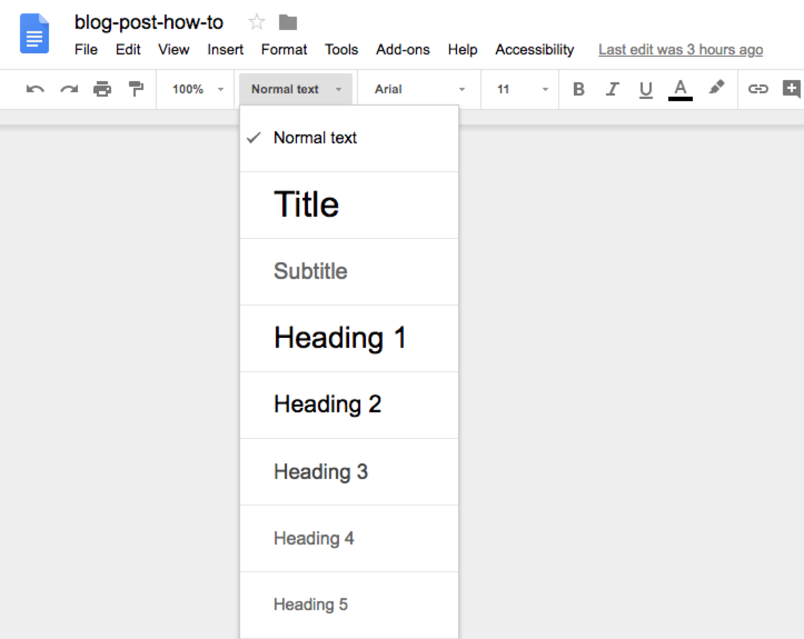
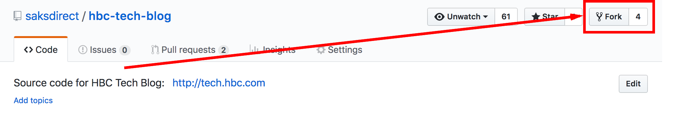
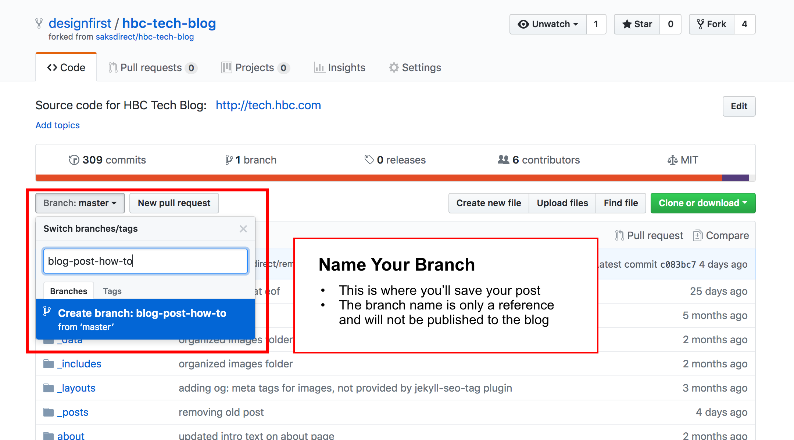
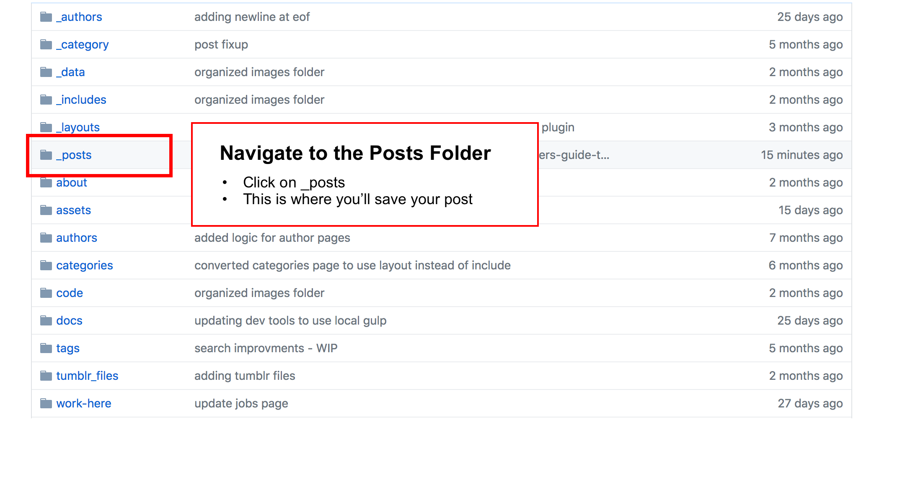
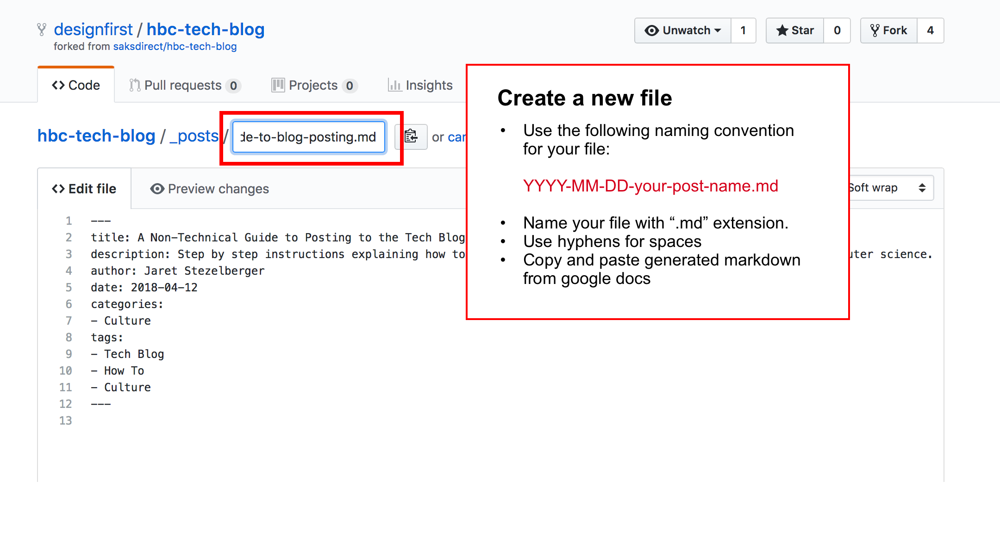
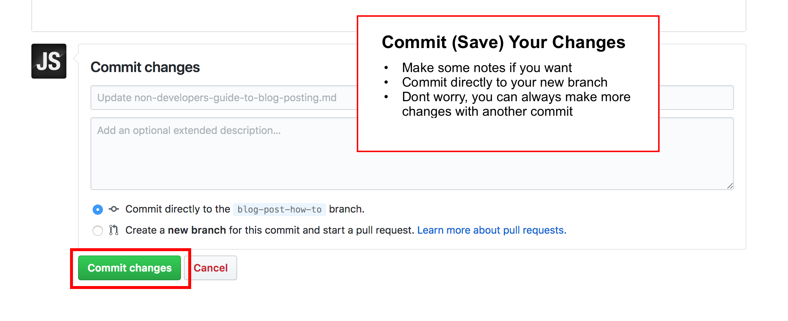
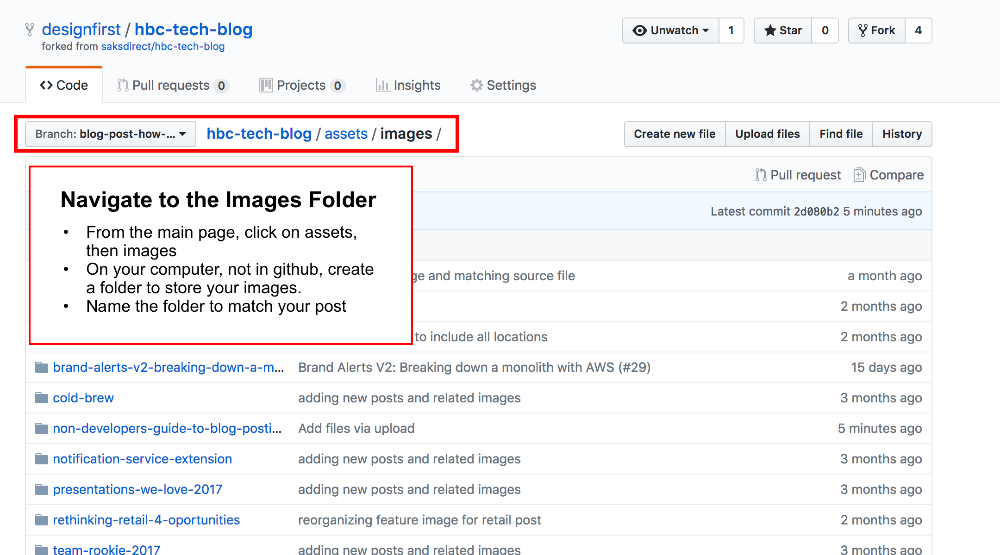
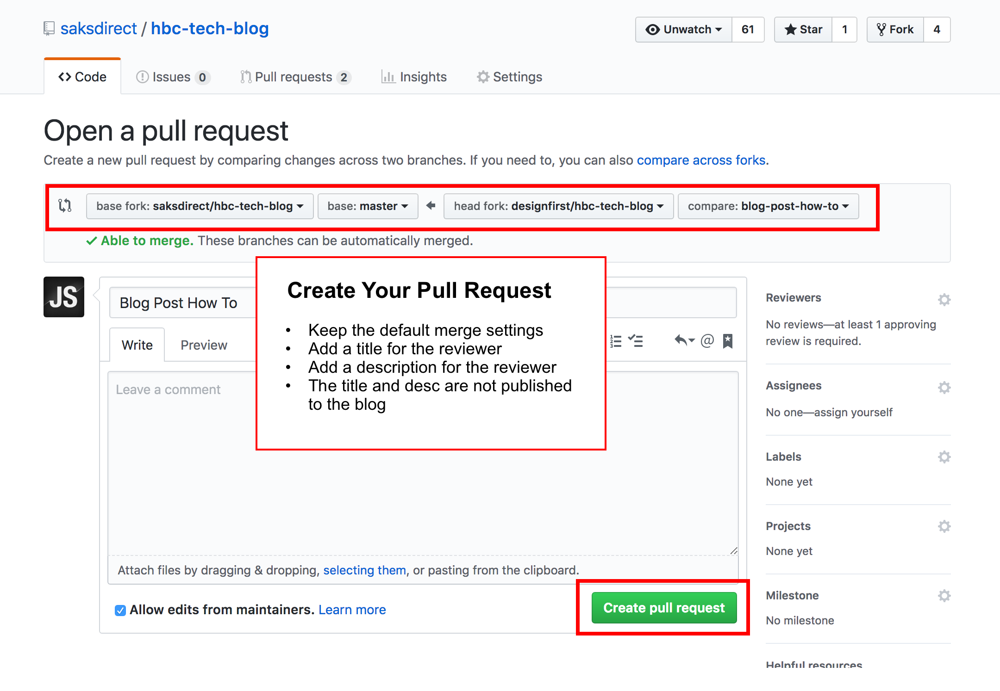

Our tech organization is obviously made up of more than just developers. Non-developers have great insight from their work too! This post is a nudge to all my fellow colleagues who are also doing amazing work and would like to share, but feel intimitated by the pull request process.
Are you a techie? We have a guide for developers here, for everyone else, read on.
Step 1: Write Your Post
Writing is probably the hardest part of this whole thing. All you need to do is open a new Google Doc and type one letter after the other. Organize your thoughts by utilizing built in text headings; ie: bulleted lists, and text styles already available in Google Docs. As an example, take a look at the doc used to create this post.

Step 2: Add Some Images
People like pictures! Illustrate your ideas with a few images, screen captures, or even cat GIFs if appropriate. Insert your images via the toolbar in Google Docs, but keep the original assets handy, we’ll need to upload them to Github and adjust the image paths later. Don’t worry about the technical stuff yet, just keep writing.
Step 3: Convert Your Google Doc to Markdown
The Markdown stuff helps some web applications format text, create links, and embed images. Don’t be scared, most of the conversion can be automated for you. There is a Google Docs Add-on called, you guessed it, Google Docs To Markdown, or GD2md for short. Follow this link to add it to your Google Drive.
When you’re happy with what you’ve written, follow the steps below:
-
From the Google Docs Add-ons menu, select GD2md-html > Convert. The sidebar window opens.
-
Use the Markdown button in the sidebar window to convert your document to Markdown. If you select part of the document, GD2md-html will convert only the selection. Otherwise it will convert the entire document. Click the Docs link for more information.
-
Preview your post by copying and pasting the text from the sidebar into an online editor like Stack Edit.
-
You’ll see there are a few extra lines of text added during the conversion. These can safely be removed, as they’re just warnings about image paths needing to be corrected. We’ll tackle these changes later.
Step 4: Add Some YAML
We use YAML formatting to store information about each post ie: title, post date, category, etc. Copy the snippet below and change the values according to your post. (make sure to copy the 3 dashes at the beginning and ending)
---
title: A Non-Technical Guide to Posting to the Tech Blog.
description: Step by step instructions explaining how to post to the tech blog without requiring a degree in computer science.
author: Jaret Stezelberger
date: 2018-04-12
categories:
- Culture
tags:
- Tech Blog
- How To
- Culture
---
Step 5: Upload Everything To Github
If you don’t already have GitHub account, get one here. It’s the modern library card! Once you’re signed into your Github Account, you’re just a few simple steps away from posting.
- Copy (Fork) HBC Tech Blog To Your GitHub Account
- Create A Copy For Your New Work (Create a New Branch)
- Add Your Post File and Then Save (Commit) it
- If Needed, Upload A Folder of Assets (Another Commit)
- Let The Team Know You’re Ready to Publish (Create A New Pull Request in GitHub)
Here’s a closer look at those steps one by one:
Step 5.1 Fork It

Step 5.2 Create A Branch For Your New Post

Step 5.3 Navigate to the Posts Folder

Step 5.4 Create Your Post File

Step 5.5 Save Your Changes

Step 5.6 Add Your Images

Step 5.7 Upload your images

Step 5.8 Update Image Your Paths
In the previous step, converting your Google Doc to Markdown, image paths were set with placeholders. You’ll need to change these to correctly match the folder and file names you’ve uploaded to GitHub.
In our example above they would change from:

to

Step 5.9 Create a New Pull Request

Summary
Hopefully, after reading this post, the tech blog has been demystified and the few technical things around markdown conversion and fixing image paths won’t scare you away. If you get stuck, try looking for your answer in the documentation here. If you need help with Markdown, there are a ton of resources online. Stack Edit is your friend.